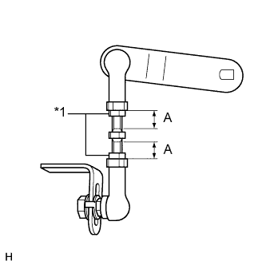

ДАТЧИК ВЫСОТЫ ПОДВЕСКИ > УСТАНОВКА |
| 1. УСТАНОВИТЕ ЛЕВЫЙ ДАТЧИК ВЫСОТЫ ЗАДНЕЙ ПОДВЕСКИ В СБОРЕ |
 |
Закрепите датчик высоты подвески 2 болтами.
| *1 | Метка |
Совместите метки на тяге и кронштейне.
Подсоедините тягу датчика и закрепите гайкой.
Подсоедините разъем и закрепите его.
Закрепите зажим.
| 2. УСТАНОВИТЕ ПРАВЫЙ ДАТЧИК ВЫСОТЫ ЗАДНЕЙ ПОДВЕСКИ В СБОРЕ |
| 3. УСТАНОВИТЕ ЗАДНЕЕ КОЛЕСО |
| 4. ПОДСОЕДИНИТЕ ПРОВОД К ОТРИЦАТЕЛЬНОМУ ВЫВОДУ АККУМУЛЯТОРНОЙ БАТАРЕИ |
| 5. ОТРЕГУЛИРУЙТЕ ВЫСОТУ АВТОМОБИЛЯ |
Приостановите регулирование высоты подвески, нажав на переключатель регулировки высоты.
Установите автомобиль на горизонтальную поверхность.
 |
Измерьте высоту подвески автомобиля (размер C - D) справа и слева.
Если фактическая высота подвески автомобиля отличается от требуемой высоты (размер C - D), отрегулируйте ее, поддомкратив раму и т.п. (операция "A").
 |
Если результат выполнения операции "A" отличается от требуемой высоты подвески (размер C - D), отрегулируйте высоту, выполнив следующие действия.
Ослабьте гайку.
Сдвиньте тягу датчика высоты подвески вверх или вниз вдоль прорези в кронштейне.
Установите требуемую высоту подвески автомобиля (размер C - D), контролируя значение на экране портативного диагностического прибора или показание вольтметра.
Затяните гайку.
Если высоту подвески автомобиля невозможно отрегулировать путем выполнения операции "A", отрегулируйте ее снова, выполнив следующие действия.
|  |
Ослабьте 2 контргайки на тяге датчика высоты подвески.
| *1 | Контргайка |
Установите требуемую высоту подвески автомобиля (размер C - D), поворачивая тягу и контролируя значение на экране портативного диагностического прибора или показание вольтметра.
Затяните 2 контргайки.
Убедитесь, что длины резьбовых частей "A" на рисунке попадают в номинальные диапазоны.
| Параметр / Устройство | Заданные условия |
| Слева | 6,0 - 12,5 мм (0,24 - 0,49 дюйма) |
| Справа | 6,5 - 15,0 мм (0,26 - 0,59 дюйма) |
Измените высоту подвески автомобиля (переведите подвеску из положения нормальной высоты в положение увеличенной высоты, а затем верните в положение нормальной высоты).
Измерьте высоту подвески автомобиля (размер C - D) справа и слева (операция "D").
Убедитесь, что высота подвески автомобиля (размер C - D) попадает в номинальный диапазон.